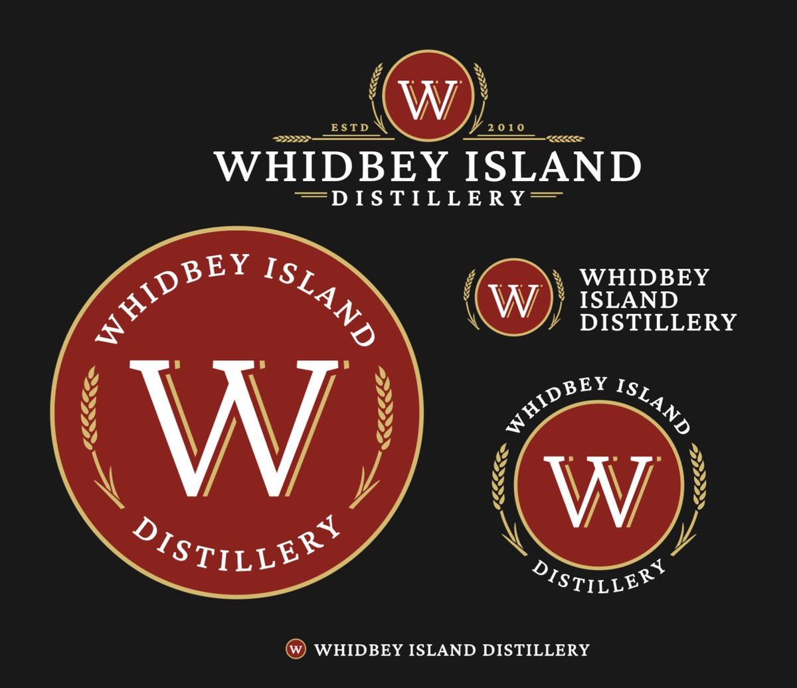
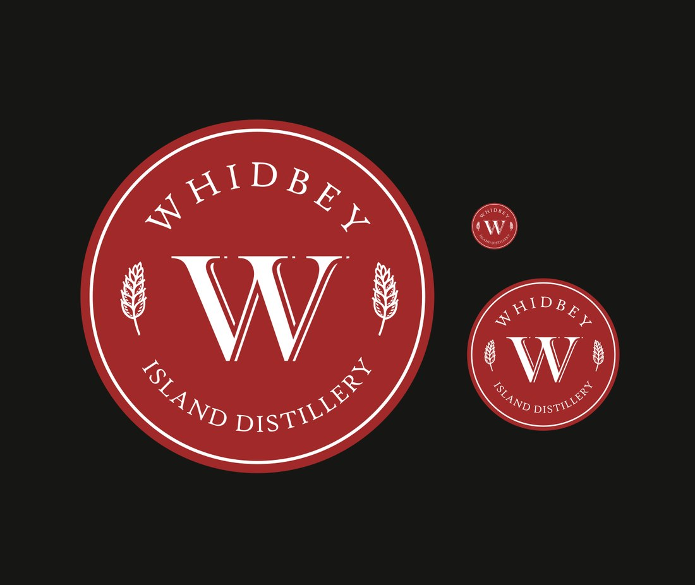
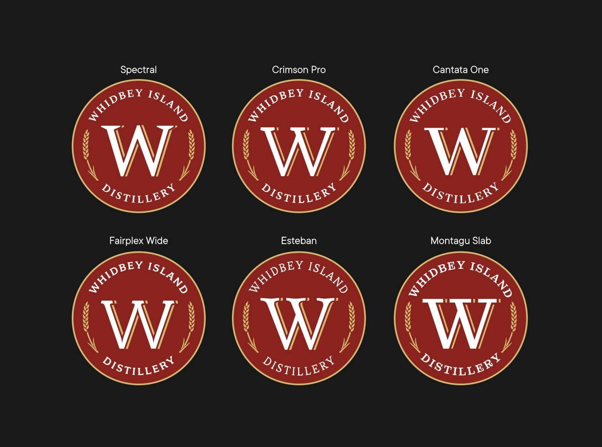
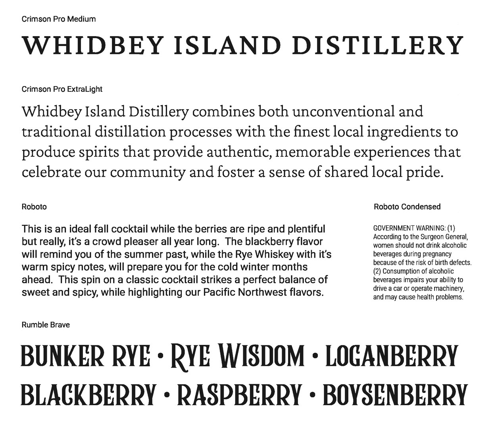
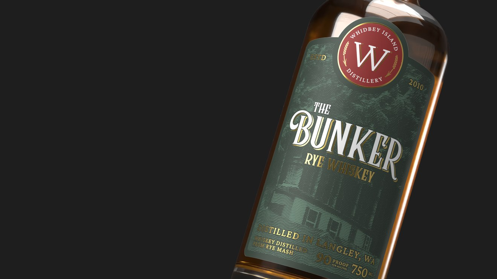

Whidbey Island Distillery: the rebrand
Turning a single, inflexible crest into a responsive identity system: logo, color, type, and a living style guide the distillery can grow with.

Overview
Whidbey Island Distillery (a Langley, Washington maker of rye whiskey and berry liqueurs) had a logo that worked on exactly one thing and drifted everywhere else. The rebrand rebuilt the identity as a system: a responsive family of lockups, a defined color palette, a coherent type system, and a living style guide the distillery can work from directly.
Where it started
The starting point was a single crest asked to do every job, and it couldn’t. Four problems, specifically:

A responsive logo system
The fix for both the scaling and the word-grouping problems was to stop treating the logo as a single artifact and build a lockup family instead: a full primary lockup for signage and packaging, a horizontal badge-and-wordmark for headers, a compact badge for tight spaces, and a stripped roundel for the smallest applications. Each is drawn so the name always reads “Whidbey Island,” then “Distillery,” at every size.

One typeface for the whole mark
Inside the old crest, the “W” and the spelled-out name were set in two different typefaces, a small thing that made the mark feel assembled rather than designed. We tested the crest “W” across six candidates (Spectral, Crimson Pro, Cantata One, Fairplex Wide, Esteban, and Montagu Slab) and unified on Crimson Pro, so the monogram and the wordmark finally speak the same language.

A type system
From there, the full type system. Crimson Pro carries the brand from the crest through display and body copy; Roboto and Roboto Condensed handle long informational copy and regulated text like the government warning; and Rumble Brave, a decorative Victorian display face, gives each product its own hand-lettered name: Bunker Rye, Rye Wisdom, and the berry liqueurs.
A defined palette
The old mark had no set color, so it drifted between print and screen. The rebrand fixed a core palette (Rye Grain gold, Crimson, Chalkboard black, and a warm Bone), then extended it into product families: a cask-and-oak series for the whiskeys and a deeper set for the berry liqueurs, so a shelf of Whidbey Island bottles reads as one line with many members.
Core palette
Cask & oak series: the whiskeys
Berry liqueurs
The Distiller’s Specimen Book
All of it lives in a single living style guide (“The Distiller’s Specimen Book”) that lays out color, type, the logo lockups, components, and voice as a set of numbered plates the distillery can work from directly. Because so much of the brand runs light type on dark grounds, the guide includes a live contrast checker: every text-and-background pairing is vetted against WCAG ratios before it reaches a label or a screen.

Across the line
With the system in place, new products start from it instead of from scratch. The Bunker (a rye whiskey in the spruce-green “Traditional” colorway) carries the crest, the type, and the palette straight onto the shelf, alongside the flagship Rye Wisdom.
Outcome
Whidbey Island Distillery went from a single, inflexible crest to a complete identity system (one that scales, reads correctly, holds its color, and keeps its type consistent) with a style guide that lets the brand keep growing without drifting.